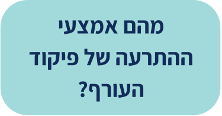
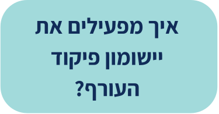

אמצעי התרעה


ניתן לקבל התרעה באמצעות התקנת היישומון של פיקוד העורף שמספק התרעה אישית ומידע מציל חיים ישירות לטלפונים הניידים על מגוון רחב של איומים בהתאם למקום שבו אתם נמצאים.
כאשר נשקף איום של ירי רקטות וטילים לאזור שבו אתם נמצאים, היישומון מזהה את המיקום ומתריע על הסכנה באמצעות אזעקה עולה ויורדת או אזעקת "צבע אדום", הזהה להתרעה המתקבלת מצופרי פיקוד העורף, ומציג את הזמן העומד לרשות האזרח לכניסה למרחב המוגן. כאשר נשקף איום אחר, ההתרעה מתקבלת באמצעות צליל קצר של אזעקה ולאחריו מלל המפרט את סוג האיום, למשל "רעידת אדמה".
על מנת להתקין ולהפעיל את יישומון פיקוד העורף לחצו על האייקון של הטלפון בתחתית המסך.
פורטל החירום הלאומי במחשב הביתי מאפשר לקבל התרעה ממוקדת ואישית לביתכם בכל פעם שמופעלת התרעה ביישובכם,
כל עוד הפורטל פתוח במחשב, תוכלו לקבל התרעה לביתכם באמצעות צליל ותצוגה. אם לא תגדירו את רשימת היישובים שברצונכם לקבל התרעה עבורם- תקבלו התרעה על כל היישובים בארץ.
שימו לב – על מנת שההתרעה הביתית תופעל, על פורטל החירום הלאומי להיות פתוח במחשב.
על מנת להפעיל את פורטל החירום לאומי כאמצעי התרעה לחצו על האייקון של המחשב בתחתית המסך.

ברחבי המדינה פרוסים אלפי צופרים של פיקוד העורף.
במצב של ירי רקטות וטילים, הצופרים מספקים התרעה באמצעות אזעקה עולה ויורדת או אזעקת צבע אדום באזור עוטף עזה. משך האזעקה שנשמעת מהצופרים הוא כמשך זמן ההתגוננות (זמן ההגעה למרחב המוגן). הדבר מספק אינדיקציה לגבי הזמן העומד לרשותנו ומאפשר לוודא שגם מי שאינו יודע את הזמן הנדרש, יגיע למרחב מוגן בזמן. באיומים שאינם ירי רקטות וטילים, הצופרים מספקים התרעה באמצעות צליל קצר של אזעקה ולאחריו מלל שמפרט את סוג האיום.
לעיתים ניתן לשמוע אזעקות מצופרים הפועלים באזורים סמוכים, שאינן מיועדות לכם. כדי להיות בטוחים שההתרעה מופעלת במקום שבו אתם נמצאים, הגדירו ביישומון פיקוד העורף כאזורי עניין את האזורים הסמוכים למקום מגוריכם ואת כל אזורי ההתרעה בעיר מפוצלת, וכך תדעו האם צליל האזעקה ששמעתם מיועד עבורכם.
בנוסף, אם אתם שוהים בתוך מבנה, קיימת סבירות שלא תשמעו את האזעקה בשל גובה המבנה, חלונות סגורים, טלוויזיה שפועלת או פעולת המזגן שבביתכם. לכן כדאי להשתמש באחד מאמצעי ההתרעה הנוספים.